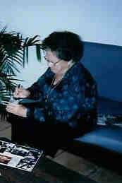
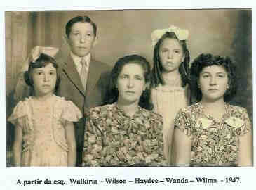

Haydee Petrella
- Nascida em: 15 Jan 1909, Fazenda Neca Junqueira, Ribeirão Preto - Sp
- Casamento: Lincoln Sant'Ana em 27 Mai 1927 em Fazenda Pinheiros, Distrito Nova Granada, Comarca Rio Preto
- Falecido: 27 Set 2005, Sp/Sp com 96 anos de idade

 Notas Gerais: Notas Gerais:
Nasceu em 15-01-1909, na fazenda Neca Junqueira, comarca de Ribeirão Preto, SP.
Juntamente com a família, com sete anos de idade, foi morar em Cedral, perto de Catanduva. Aos 11 anos, foi para a cidade de Rio Grande da Serra, quando morreu o avô Rocco (1920).
Posteriormente, foi para São Caetano, onde ficou seis meses.
Casou em 27-05-1927, com Lincoln Sant'Ana ( nascido em 27-03-1900, em Frutal, MG, e falecido em 24-10-1963, em Uberaba - MG).
Casaram e moraram na Fazenda Pinheiros, que era do pai da Haydee (Nunzio), e ficava perto de Palestina. Depois, mudaram para Nova Granada e, posteriormente, voltaram para a fazenda Pinheiros, que já não era mais do Nunzio.
Eventos notáveis em Sua vida foram:
 (318 KB)
(Clique na Foto para vê-la no Tamanho Original)")
• fotos: Haydee e Lincoln (passeando no jardim da Luz - década de 20).

• fotos: Haydee.

• fotos: Haydee com os filhos - Walkiria - Wilson - Wanda - Wilma - 1947.
Haydee casad[:o::a] Lincoln Sant'Ana em 27 Mai 1927 em Fazenda Pinheiros, Distrito Nova Granada, Comarca Rio Preto. (Lincoln Sant'Ana nasceu em em 27 Mar 1900 em Frutal, Mg e faleceu em 24 Out 1963 em Uberaba - Mg.)
|